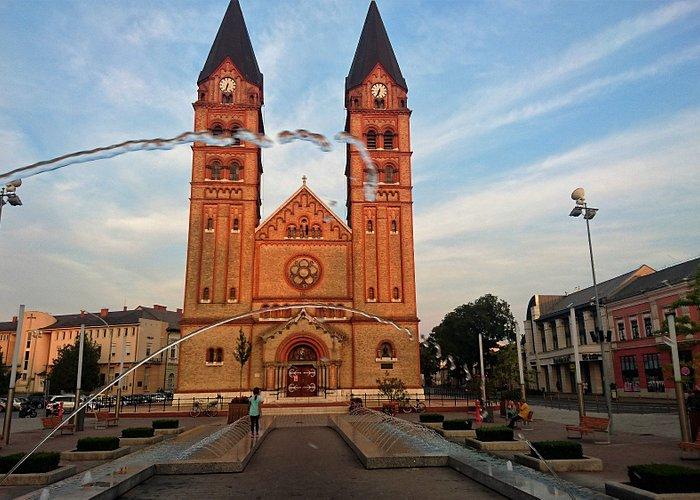
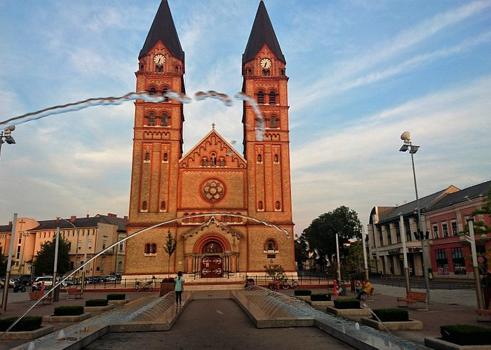

| Loc | Numele orașului | Județ | Populația |
|---|---|---|---|
| 1 | Budapesta | Budapesta | 1,696,128 |
| 2 | Debrecen | Hajdú-Bihar | 204,124 |
| 3 | Miskolc | Borsod-Abaúj-Zemplén | 172,637 |
| 4 | Szeged | Csongrád | 164,883 |
| 5 | Pécs | Baranya | 156,649 |
| 6 | Győr | Győr-Moson-Sopron | 128,265 |
| 7 | Nyíregyháza | Szabolcs-Szatmár-Bereg | 116,298 |
| 8 | Kecskemét | Bács-Kiskun | 109,847 |
| 9 | Székesfehérvár | Fejér | 109,600 |
| 10 | Szombathely | Vas | 79,534 |


 
